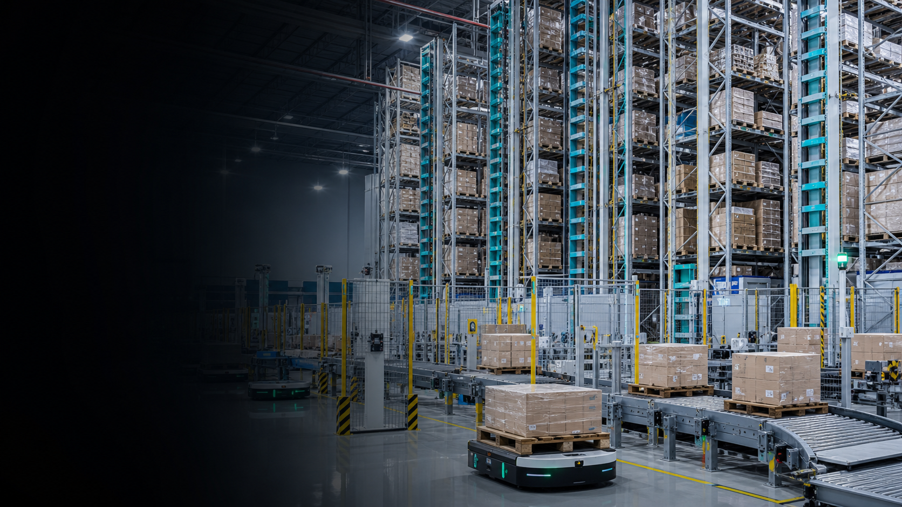
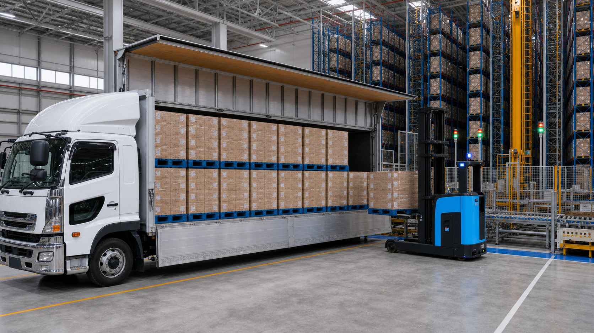

物流現場調査Logistics Site Survey
現場写真、倉庫図面、作業動線、入出庫量、車両条件を確認し、改善余地を整理します。We review site photos, drawings, operation flows, inbound and outbound volume, and vehicle conditions.

スマート物流・自動倉庫ソリューション Smart Logistics & Intelligent Warehousing Solutions
Grandio International Co., Ltd. / 大有国際株式会社は、物流現場の物量、倉庫条件、作業動線、設備投資、運用コストを整理し、スマート倉庫・自動倉庫・WMS/WCS導入に向けた検討と実行を支援します。
新築倉庫だけでなく、既存倉庫・テント倉庫・遊休スペースを活用した低投資型の改善案も検討し、企業の投資回収と長期運用を重視した現実的な提案を行います。
Grandio International Co., Ltd. supports companies in planning and implementing smart warehousing solutions by analyzing real logistics volume, warehouse conditions, operational flows, equipment investment and operating costs.
We provide practical proposals focused on ROI and long-term operation, including not only new warehouse projects but also smart upgrades for existing warehouses, tent warehouses and unused spaces.
サービスServices
Grandio International Co., Ltd. は、製造企業、物流部門、工務部門、購買部門、財務部門、施工会社、金融機関が同じ前提で判断できるよう、現場情報と投資情報を整理します。
Grandio International Co., Ltd. organizes operational and investment information so manufacturers, logistics teams, engineering teams, procurement, finance, contractors and financial institutions can evaluate projects on a common basis.
現場写真、倉庫図面、作業動線、入出庫量、車両条件を確認し、改善余地を整理します。We review site photos, drawings, operation flows, inbound and outbound volume, and vehicle conditions.
SKU、最大在庫、繁忙期差、出荷単位、保管期間を確認し、必要な能力を検討します。We evaluate SKU count, peak inventory, seasonality, shipment units and storage periods.
ASRS、AGV、AMR、AGF、WMS、WCS、コンベヤの組み合わせを比較します。We compare ASRS, AGV, AMR, AGF, WMS, WCS and conveyor options.
既存倉庫、テント倉庫、遊休スペースを活用した段階導入案を検討します。We design phased pilots using existing warehouses, tent warehouses and unused spaces.
設備投資額、運用コスト、人件費、外部倉庫費用を整理し、回収期間を検討します。We organize equipment investment, operating costs, labor costs and external warehouse costs.
社内検討、メーカー確認、施工方針、金融機関説明に必要な資料を整えます。We prepare materials for internal review, vendor checks, construction planning and financing discussions.
ソリューションSolutions

天井高さ、床荷重、柱位置、動線を確認し、既存スペースを活かした改善案を検討します。We review height, floor load, columns and flows to use existing space effectively.
設備メーカー、施工方、システム方との確認事項を整理し、比較検討を支援します。We coordinate check points among equipment vendors, contractors and system providers.
稼働後の人員、保守、在庫精度、出荷品質、拡張性を見据えた設計を重視します。We focus on staffing, maintenance, inventory accuracy, shipping quality and scalability.
導入プロセスProcess
現状の課題、対象倉庫、物量、投資検討の背景を確認します。We confirm current issues, target sites, volume and investment background.
図面、写真、出荷実績、作業体制、コスト情報を整理します。We organize drawings, photos, shipping records, staffing and cost data.
複数の設備方式と段階導入案を比較し、概算投資額と効果を検討します。We compare options and phased plans with estimated investment and effects.
投資判断、メーカー確認、施工条件確認に必要な資料を整えます。We prepare materials for investment decisions, vendor checks and construction review.
導入前確認項目Checklist
すべてが揃っていなくても相談可能です。まずは取得できる範囲の情報から、導入可能性と投資判断の前提を整理します。
You do not need to prepare everything in advance. We can start with available information and clarify the assumptions for implementation and investment review.
会社情報Company
大有国際株式会社 / Grandio International Co., Ltd. は、スマート倉庫導入に必要な現場情報、技術方式、投資判断資料、関係者調整を支援します。設備を自社製造する会社ではなく、導入判断とプロジェクト推進を支える立場で、現実的な改善案を組み立てます。
Grandio International Co., Ltd. supports site information review, technology comparison, investment study materials and stakeholder coordination for smart warehousing projects. We are not an equipment manufacturer; we support practical planning and project progress.
会社概要Company Profile
お問い合わせContact
投資判断、契約条件、設備メーカー選定等については、当社プロジェクト責任者と連携の上、対応いたします。
Investment decisions, contract conditions and equipment manufacturer selection will be handled in coordination with our project management team.